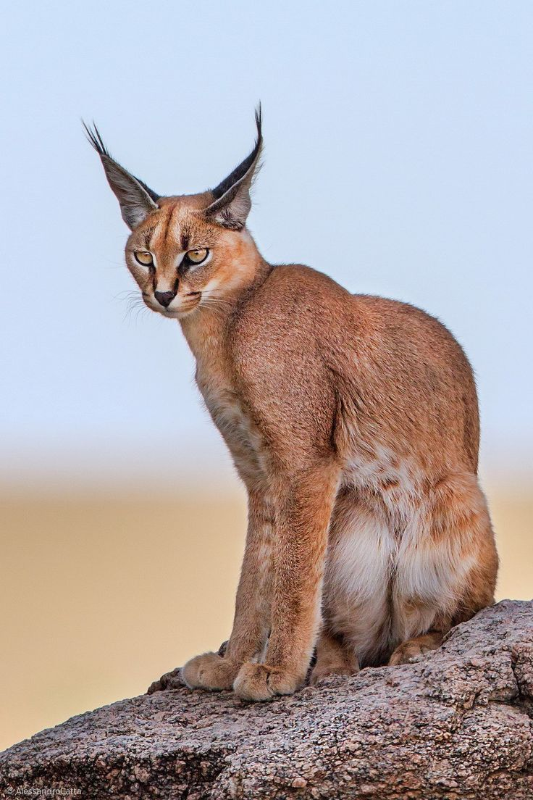

Featured Exotic Cats

Bengal Cat
Active and wild-looking. Bengals are playful and intelligent.
Savannah Cat
Known for their dog-like behavior and tall, lean build.

Caracal
Elegant wild cats with tufted ears; not recommended as pets.